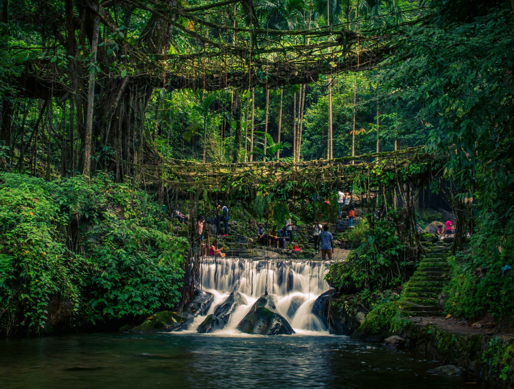

Choose the tree
Rubber fig trees are used because their flexible aerial roots can be guided as they grow.
In Meghalaya, people guide the aerial roots of rubber fig trees across streams and ravines, patiently shaping bridges that continue to grow.
Follow the roots ↓Living root bridges are examples of traditional ecological knowledge. They depend on local skill, living trees, and patience across generations.
Rubber fig trees are used because their flexible aerial roots can be guided as they grow.
Roots are directed across a stream or ravine, sometimes using hollowed trunks or other supports as guides.
Roots grow, intertwine, and can be trained to form a stable crossing over many years.
Continued maintenance and local knowledge help keep the living structure usable.

Living root bridges are especially associated with the Khasi and Jaintia Hills, where heavy rainfall and rugged terrain make reliable crossings valuable.
Unlike a conventional bridge made from fixed materials, a living root bridge is formed from plant growth and can continue changing as the tree matures.